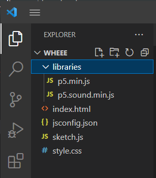
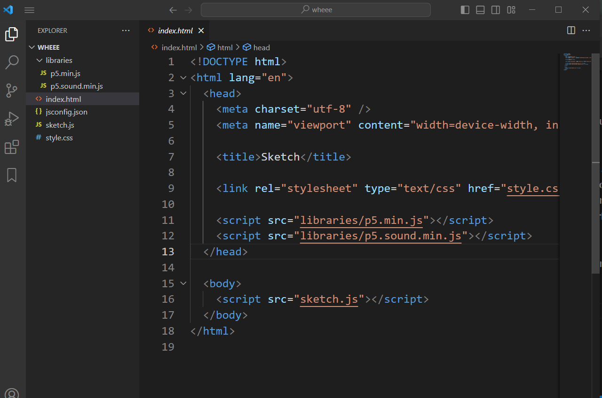
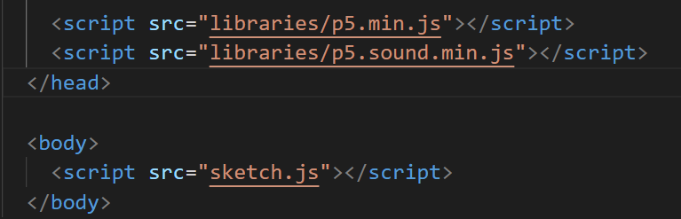
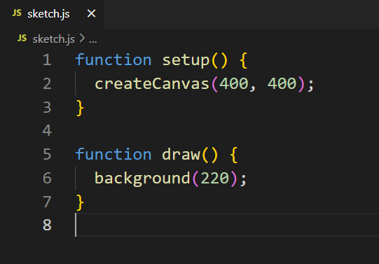

So, you've created your P5.js project! Let's very quickly take a look at what you have.
On the left side of VSCode, you will notice a list of the files on your folder.
Here's what each thing is for:
style.css and jsconfig.json - While working with p5, we won't ever need to touch these, so I won't dable too much in them. But if you're curious, the .css file is used to configure how a page looks in a way that's more streamlined than doing everything on the HTML file, and .json files are typically used to store data that is then read in Javascript code.
The libraries folder — This folder contains two files: "p5.min.js" and "p5.sound.min.js". When we write code that uses P5.js functionality, we need these libraries to be referenced in our HTML. Otherwise, the functions will read as nothing more than gibberish.
You might be wondering why the library is called "p5.min.js" instead of just "p5.js". This is because the version created by our file extension is actually a 'minimized' version of P5.js. It basically condenses all of its code, making it basically illegible if you try to open the file on your own, but also making it more memory efficient. However, p5.min has one disadvantage, which is that when we get errors they will look somewhat cryptic and hard to read. Because of this, you might want to download the full version of P5. Once you download it, simply extract the full library from the .zip file and add it to your libraries folder.
index.html — When we use a web browser to open up your P5.js projects (or any web project), the first thing it will look for is a file with the name "index.html". Without this file, nothing will work. This is what it looks like.
I won't go into too much detail about how HTML works here, because we want to get to working on P5.js. The most important lines to us are these ones.
Notice that these lines make reference to our libraries as well as the file "sketch.js". They are contained in script tags, which is the way of telling HTML to run the code in those files. The libraries are referenced inside the 'head' element of HTML because they don't need to show anything, but our P5.js sketch is in the body element to ensure it shows up on our page.
Sidenote - if you added the full p5.js libraries to your folder, you need to replace "p5.min.js" with "p5.js", or nothing will actually change.
sketch.js — This is where we will be spending most of our time during this workshop. When you first create a p5.js project, your code should look something like this.
And if you press on the Go Live button to run your code on the browser, you should get somethng like this
Not very impressive... yet! Let's break down what's going on though.
Back